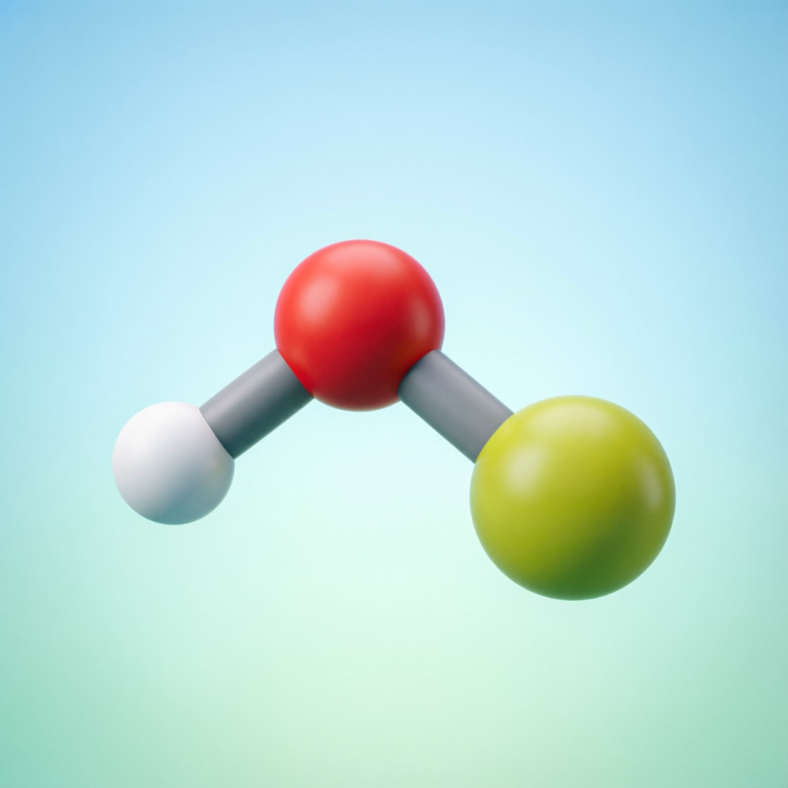
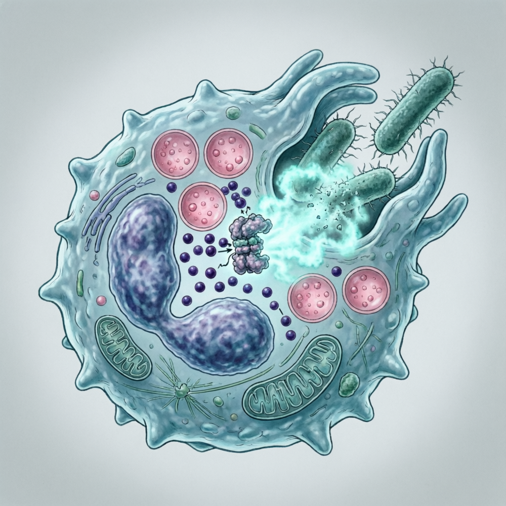

La molécula que tu propio cuerpo produce para protegerte. Un desinfectante poderoso, seguro y ecológico que cuida de ti, tus mascotas y tu entorno.

El ácido hipocloroso (HOCl) es la forma activa del cloro libre, reconocida como uno de los biocidas más potentes y seguros conocidos por la ciencia.
Fórmula HOCl — formado por un átomo de hidrógeno (H), uno de oxígeno (O) y uno de cloro (Cl). Es un ácido débil (pKa ≈ 7.5) que en solución acuosa se disocia parcialmente en H⁺ y OCl⁻.
A pH óptimo (5.0-6.5), el HOCl es la especie dominante y ejerce una actividad oxidante 80-120 veces más potente que el ion hipoclorito (OCl⁻), destruyendo membranas celulares y material genético de patógenos.
Tras su acción antimicrobiana, el HOCl se reconvierte en agua y sal (NaCl). No genera subproductos tóxicos persistentes, convirtiéndolo en el desinfectante más ecológico disponible.
Aunque ambos contienen cloro, son moléculas distintas. La lejía (NaOCl) es cáustica, irritante y genera vapores tóxicos. El HOCl, en cambio, tiene un pH cercano al de la piel humana (5.5-6.5), es no irritante, no tóxico y puede aplicarse directamente sobre piel, mucosas, alimentos y superficies sin riesgo.
Estudios publicados en Journal of Hospital Infection (2020) confirman que el HOCl al 0.01% es igual o más efectivo que la lejía al 0.1% contra virus, bacterias y hongos, con un perfil de seguridad drásticamente superior.
Tu sistema inmune produce HOCl de forma natural. Cada vez que un neutrófilo detecta un patógeno, activa un mecanismo de defensa extraordinario.

El neutrófilo engulle bacterias, virus u hongos mediante fagocitosis, encerrándolos en un fagosoma.
Se activa el complejo enzimático NADPH oxidasa (NOX2) en la membrana del fagosoma, generando un "estallido respiratorio" — un flujo masivo de electrones que produce anión superóxido (O₂⁻).
La superóxido dismutasa convierte O₂⁻ en peróxido de hidrógeno (H₂O₂). Luego, la enzima mieloperoxidasa (MPO) cataliza la reacción entre H₂O₂ y iones cloruro (Cl⁻) produciendo ácido hipocloroso (HOCl).
El HOCl oxida proteínas, lípidos y ácidos nucleicos del patógeno, destruyéndolo en milisegundos. Una sola célula puede producir suficiente HOCl para eliminar miles de microorganismos.
O₂ + NADPH → O₂⁻ + NADP⁺ + H
↓ SOD (superóxido dismutasa)
2 O₂⁻ + 2H⁺ → H₂O₂ + O₂
↓ MPO (mieloperoxidasa)
H₂O₂ + Cl⁻ + H → HOCl + H₂O
Referencia: Klebanoff, S.J. (2005). Myeloperoxidase. Journal of Leukocyte Biology, 77(5), 598-625.
A diferencia de otros desinfectantes, el ácido hipocloroso es biocompatible. No daña tejidos sanos porque nuestro cuerpo ya lo reconoce y lo neutraliza de forma natural.
El HOCl a concentraciones de 50-200 ppm y pH 5.0-6.5 es compatible con el pH de la piel (5.5). No causa quemaduras, enrojecimiento ni dermatitis.
No genera cloraminas ni gases irritantes. Puede usarse en espacios cerrados sin riesgo para las vías respiratorias. La FDA lo clasifica como seguro para contacto con alimentos.
Grupos vulnerables como neonatos, personas con asma, alergias o inmunodepresión pueden estar en contacto directo con superficies tratadas con HOCl sin riesgo.
La FDA aprobó en 2008 el HOCl como agente de curación de heridas. Estudios clínicos demuestran aceleración del cierre de heridas y reducción de infecciones.
Evaluación basada en evidencia científica: potencia, espectro, seguridad y condiciones de uso.
Los compuestos de amonio cuaternario (CQAC) son efectivos (★★★★☆) en superficies limpias contra bacterias vegetativas y virus envueltos. Sin embargo, su espectro es selectivo: no son eficaces contra esporas bacterianas, mycobacterias, ni virus no envueltos (norovirus, rotavirus, adenovirus). Además, su eficacia disminuye drásticamente en presencia de materia orgánica, agua dura, o superficies porosas. El HOCl mantiene su espectro completo en condiciones variables y es seguro para contacto directo.
| Característica | ★ MEJOR OPCIÓN 🏆 Ácido Hipocloroso (HOCl) | ⚠️ Lejía (Hipoclorito de Sodio) |
🧴 Alcohol (Etanol 70%) |
🧪 Amonio Cuaternario (CQAC / AQC) |
|---|---|---|---|---|
| Potencia biocida (en condiciones óptimas) |
★★★★★ Amplio espectro |
★★★★☆ Alta (bacterias/virus) |
★★★★☆ Alta (rápida acción) |
★★★★☆ Alta (superficies limpias) |
| Espectro de acción | ✓ Bacterias, virus, hongos, esporas | ~ Limitado (no esporas, no mycobacterias) | ✗ No esporas, virus limitados | ~ Selectivo (no envueltos, no esporas) |
| Velocidad de acción | ✓ Segundos | ~ Minutos | ~ Minutos | ~ 5-10 min contacto |
| Tolerancia a materia orgánica | ✓ Alta (oxidante directo) | ✗ Muy baja (se inactiva) | ✗ Baja (se consume) | ✗ Muy baja (adsorción) |
| Seguridad en piel | ✓ No irrita | ✗ Quema e irrita | ⚠ Seca e irrita | ⚠ Irrita y sensibiliza |
| Vapores tóxicos | ✓ Ninguno | ✗ Gases de cloro | ⚠ Vapores inflamables | ⚠ Irritación respiratoria |
| Seguro para mascotas | ✓ Sí, incluso si se ingiere | ✗ Muy tóxico | ✗ Tóxico si se ingiere | ✗ Tóxico (úlceras orales) |
| Seguro para plantas | ✓ No fitotóxico | ✗ Daña tejidos | ⚠ Puede dañar | ✗ Fitotóxico |
| Biodegradabilidad | ✓ 100% (agua y sal) | ✗ Residuos persistentes | ~ Moderada | ✗ Persistente en ambiente |
| Corrosividad | ✓ No corrosivo | ✗ Corroe metales | ~ Daña superficies | ~ Residuos pegajosos |
| Elimina esporas | ✓ Sí | ✓ Sí (alta conc.) | ✗ No | ✗ No efectivo |
| Elimina virus no envueltos | ✓ Sí (norovirus, rotavirus) | ✓ Sí | ✗ Limitado | ✗ No efectivo |
| pH de uso | 5.0 - 6.5 | 11.0 - 13.0 | 5.5 - 8.0 | 7.0 - 10.0 |
| Residuos en superficie | ✓ Sin residuos | ✗ Requiere enjuague | ~ Se evapora | ✗ Película pegajosa |
| Aprobación FDA/USDA | ✓ Sí (GRAS) | ~ Limitada | ~ Para superficies | ✗ No para alimentos |
| Apto para alimentos | ✓ Sí, directo | ✗ Requiere enjuague | ✗ No recomendado | ✗ No apto |
| Genera resistencia microbiana | ✓ No (oxidante) | ✓ No (oxidante) | ✓ No | ⚠ Sí (documentado) |
| Impacto ambiental | ✓ Nulo | ✗ Alto (tóxico acuático) | ~ Moderado | ✗ Alto (bioacumulable) |
La opción más versátil y segura. Eficacia de amplio espectro en condiciones variables, con seguridad para contacto directo.
Efectiva en superficies limpias, pero cáustica, irritante y con vapores tóxicos. Requiere enjuague y precauciones.
Rápida acción contra bacterias y virus envueltos, pero no elimina esporas y es inflamable. Seca la piel.
Efectivo en superficies limpias contra bacterias y virus envueltos. Limitado contra esporas, virus no envueltos y materia orgánica.
Los compuestos de amonio cuaternario (CQAC) son desinfectantes de nivel intermedio ampliamente utilizados. Su eficacia está bien documentada en condiciones controladas:
Fuentes: McDonnell & Russell (1999) Clin Microbiol Rev; CDC Guidelines (Rutala & Weber); EPA Registration Data.
Décadas de investigación respaldan la eficacia y seguridad del ácido hipocloroso.
HOCl al 0.01% inactiva SARS-CoV-2 en 30 segundos. Efectivo contra influenza, HSV, adenovirus y coronavirus.
Elimina MRSA, E. coli, S. aureus, P. aeruginosa, C. difficile. Eficacia ≥ 99.99% en ≤30 segundos.
Efectivo contra Candida albicans, Aspergillus niger, dermatofitos y mohos.
El HOCl acelera la cicatrización, reduce la inflamación y promueve la angiogénesis en heridas crónicas y agudas.
La FDA aprobó soluciones de HOCl para higiene palpebral y tratamiento de blefaritis.
USDA y FDA autorizan HOCl como agente de lavado de productos frescos. Extiende vida útil sin residuos.
Wang, H. et al. (2020). "Hypochlorous acid as a potential wound care agent." Journal of Burn Care & Research, 41(1), 127-135.
Kampf, G. et al. (2020). "Persistence of coronaviruses on inanimate surfaces." Journal of Hospital Infection, 104(3), 246-251.
Klebanoff, S.J. (2005). "Myeloperoxidase: friend and foe." Journal of Leukocyte Biology, 77(5), 598-625.
Hipólito, C.G. et al. (2012). "Hypochlorous acid for wound healing." Wound Repair and Regeneration, 20(5), 531-539.
Rutala, W.A. & Weber, D.J. (2019). "CDC Guideline for Disinfection and Sterilization." CDC Guidelines, Atlanta, GA.
FDA. (2023). "Generally Recognized as Safe (GRAS) — Hypochlorous Acid." Federal Register, 21 CFR 173.315.
McDonnell, G. & Russell, A.D. (1999). "Antiseptics and disinfectants: activity, action, and resistance." Clinical Microbiology Reviews, 12(1), 147-179.
Russell, A.D. (2004). "Biocide use in the antimicrobial resistance debate." International Microbiology, 7, 233-243.
Desde el hogar hasta la industria, el HOCl ofrece soluciones de desinfección seguras y eficaces.
Desinfección de superficies, cocina, baño, juguetes, ropa de cama y aire.
Cuidado de heridas, higiene bucal, cuidado de lentes de contacto, blefaritis.
Higiene de pelaje, desinfección de camas, eliminación de olores, cuidado dental.
Lavado de frutas y verduras, desinfección de superficies de cocina y utensilios.
Desinfección de áreas comunes, escritorios, equipos electrónicos y sistemas HVAC.
Desinfección de aulas, comedores, baños y áreas de juego. Seguro para niños.
Control de patógenos en cultivos, lavado postcosecha, desinfección de invernaderos.
Tratamiento de agua, desinfección de equipos alimentarios, control de biofilms.
No. La lejía es hipoclorito de sodio (NaOCl), con pH alcalino (11-13), cáustico e irritante. El ácido hipocloroso (HOCl) tiene pH cercano al neutro (5.0-6.5), es el mismo que produce tu sistema inmune y es seguro para contacto directo con piel, mucosas y alimentos.
Sí. El HOCl a concentraciones de 50-200 ppm y pH 5.0-6.5 es compatible con el pH natural de la piel (5.5). La FDA lo ha aprobado para uso tópico en cuidado de heridas, higiene de manos y limpieza facial.
Sí. El HOCl se degrada rápidamente en agua y sal (NaCl). Los veterinarios lo utilizan directamente sobre heridas y pelaje. A diferencia de los desinfectantes con amonios cuaternarios, el HOCl no presenta riesgo de intoxicación.
No. El HOCl a concentraciones ≤200 ppm no es fitotóxico. Se utiliza en agricultura para controlar hongos y bacterias patógenas, y en el lavado de frutas y verduras para consumo directo.
El HOCl se degrada con la luz y el calor. Un producto bien formulado y envasado en envase opaco tiene una vida útil de 12-24 meses. Una vez abierto, usarlo dentro de 3-6 meses. Almacenar en lugar fresco, oscuro y con el envase bien cerrado.
Para desinfección de superficies: 100-200 ppm. Para uso en piel y mucosas: 50-100 ppm. Para lavado de alimentos: 50-200 ppm. La clave es mantener el pH entre 5.0 y 6.5, donde el HOCl es la especie dominante (>90%).
¿Tienes preguntas sobre el ácido hipocloroso? ¿Necesitas más información sobre sus aplicaciones o la evidencia científica? No dudes en contactarnos.
Para mayor información, envía tu consulta a:
Ing. Avigail Avila B
avigailavila01@gmail.comResponderemos tu consulta a la brevedad posible.
Información sobre el ácido hipocloroso y sus beneficios.
Estudios, investigaciones y referencias bibliográficas.
Propuestas de trabajo conjunto y divulgación científica.
El ácido hipocloroso es la elección inteligente: máxima eficacia antimicrobiana con la seguridad que solo una molécula natural puede ofrecer.
Personas
Mascotas
Plantas
Planeta